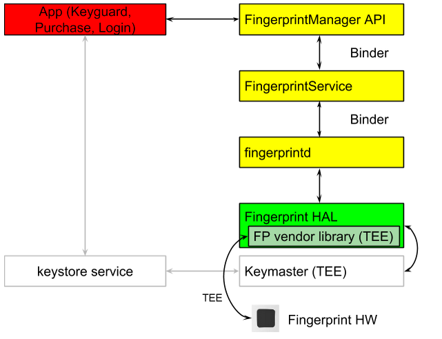

In this document
Overview
If a device has a fingerprint sensor, a user can enroll one or more fingerprints and then use their fingerprints to unlock the device and perform other tasks.
Android uses the Fingerprint Hardware Abstraction Layer (HAL) to connect to a vendor-specific library and fingerprint hardware, e.g. a fingerprint sensor.
To implement the Fingerprint HAL, you must implement
functions
in fingerprint.h (/hardware/libhardware/include/hardware/fingerprint.h)
in a vendor-specific library; please see the comments in
the fingerprint.h file.
Fingerprint matching flow
The following is a high-level flow for fingerprint matching. This flow assumes that a fingerprint already has been enrolled on the device, i.e. the vendor-specific library already has enrolled a template for the fingerprint. Also see Authentication.
The fingerprint sensor of a device generally is idle. But in response to a call
to the authenticate or enroll function, the fingerprint
sensor listens for a touch (and perhaps the screen
wakes up when a user touches the fingerprint sensor).
- The user places a finger on the fingerprint sensor, and the vendor-specific library determines if there is a match based on the current set of enrolled templates.
- The result of step 1 is passed to the Fingerprint HAL, which notifies
fingerprintd(the Fingerprint daemon) of a fingerprint authentication.
Note that as more templates are stored on a single device, the time needed for matching is increased.
Architecture
The Fingerprint HAL interacts with the following components:
- FingerprintManager API. Interacts directly with an app in an app process.
- Each app has an instance of FingerprintManager.
- FingerprintManager is a wrapper that communicates with FingerprintService.
- FingerprintService. A singleton service that operates in the system
process, which handles
communication with
fingerprintd. - fingerprintd (Fingerprint daemon). A C/C++ implementation of the
binder interface from FingerprintService. The
fingerprintddaemon operates in its own process and wraps the Fingerprint HAL vendor-specific library. - Fingerprint HAL vendor-specific library. A hardware vendor's implementation of the Fingerprint HAL. The vendor-specific library communicates with the device-specific hardware.
- Keystore API and Keymaster. These components provide hardware-backed cryptography for secure key storage in a Trusted Execution Environment (TEE).
As shown in the following diagram, a vendor-specific HAL implementation needs to use the communication protocol required by a TEE.
Figure 1. High-level data flow for fingerprint authentication
Thus, raw images and processed fingerprint features must not be passed in untrusted memory. All such biometric data needs to be secured within sensor hardware or trusted memory. (Memory inside the TEE is considered as trusted memory; memory outside the TEE is considered untrusted.)
Rooting must not compromise biometric data.
As shown in the following diagram, fingerprintd makes calls through the
Fingerprint HAL to the vendor-specific library to enroll fingerprints and
perform other operations.
Figure 2. Interaction of the
fingerprint daemon (fingerprintd) with the fingerprint vendor-specific library
Fingerprint implementation guidelines
The guidelines in this section are intended to ensure the following:
- Fingerprint data is not leaked
- Fingerprint data is removed when a user is removed from a device
Here are the guidelines:
- Raw fingerprint data or derivatives (e.g. templates) must never be accessible from outside the sensor driver or Trusted Execution Environment (TEE). Hardware access must be limited to the TEE, if the hardware supports it, and must be protected by an SELinux policy. That is, the Serial Peripheral Interface (SPI) channel must be accessible only to the TEE, and there must be an explicit SELinux policy on all device files.
- Fingerprint acquisition, enrollment and recognition must occur inside the TEE.
- Only the encrypted form of the fingerprint data can be stored on the file system, even if the file system itself is encrypted.
- Fingerprint templates must be signed with a private, device-specific key, for example with AES, with at least the absolute file-system path, group and finger ID such that template files are inoperable on another device or for anyone other than the user that enrolled them on the same device. For example, copying the fingerprint data from a different user on the same device, or from another device, must not work.
- Implementations must either use the file system path provided by the
set_active_group()function or provide a way to erase all user template data when the user is removed. It is strongly recommended that fingerprint template files be stored as encrypted in the path provided. If this is infeasible due to TEE storage requirements, then the implementer must add hooks to ensure removal of the data when the user is removed.
Major functions in the Fingerprint HAL
Below are the major functions in the /hardware/libhardware/include/hardware/fingerprint.h file; see the detailed descriptions in that
file.
- enroll. Switches the HAL state machine to start the collection and storage of a fingerprint template. As soon as enrollment is complete, or after a timeout, the HAL state machine is returned to the idle state.
- pre_enroll. Generates a unique token to indicate the start of a fingerprint enrollment.
Provides a token to the
enrollfunction to ensure there was prior authentication, e.g. using a password. The token is wrapped and, for example, HMAC'd, once the device credential is confirmed, to prevent tampering. The token must be checked during enrollment to verify that the token is still valid. - get_authenticator_id. Returns a token associated with the current fingerprint set.
- cancel. Cancels any pending enroll or authenticate operations. The HAL state machine is returned to the idle state.
- enumerate. Synchronous call for enumerating all known fingerprint templates.
- remove. Deletes a fingerprint template.
- set_active_group. Restricts a HAL operation to a set of fingerprints that belong to a specified group (identified by a group identifier, or GID).
- authenticate. Authenticates a fingerprint-related operation (identified by an operation ID).
- set_notify. Registers a user function that will get notifications from the HAL. If the HAL state machine is in a busy state, the function is blocked until the HAL leaves the busy state.